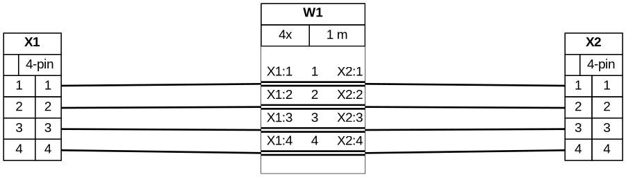
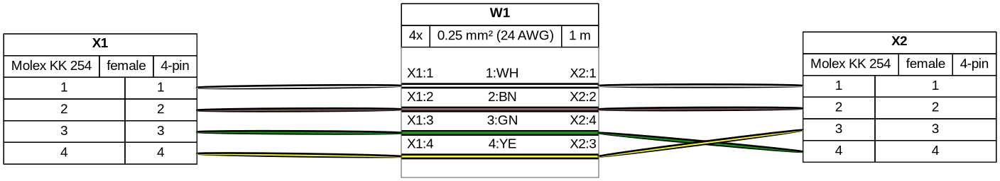
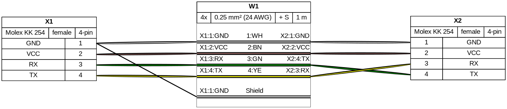
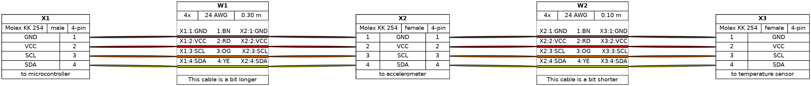
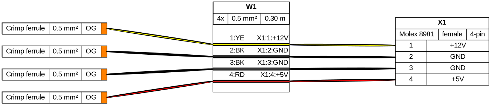
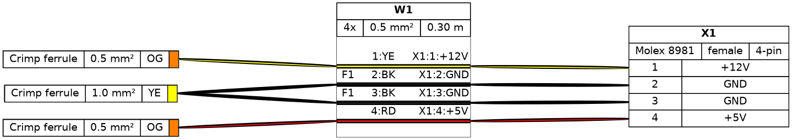
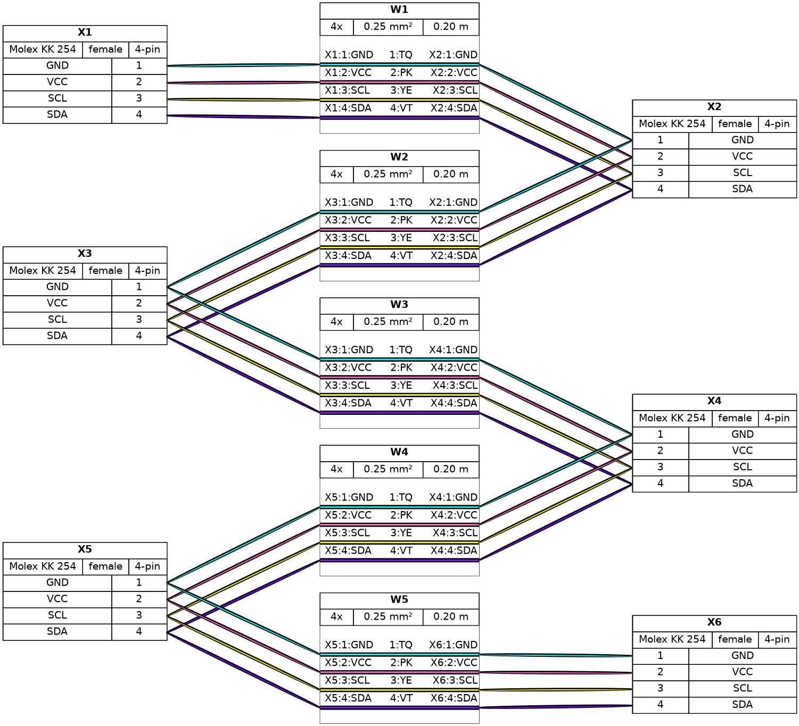
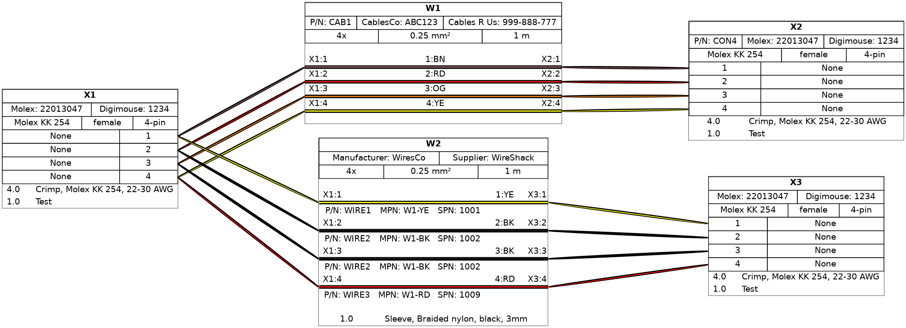

Filare Tutorial¶
01 - Bare-bones example¶
- Minimum working example
- Only 1-to-1 sequential wiring
connectors:
X1:
pincount: 4
X2:
pincount: 4
cables:
W1:
wirecount: 4
length: 1
connections:
- - X1: [1-4]
- W1: [1-4]
- X2: [1-4]

02 - Adding parameters and colors¶
- Parameters for connectors and cables
- Auto-calculate equivalent AWG from mm2
- Non-sequential wiring
connectors:
X1:
pincount: 4
# More connector parameters:
type: Molex KK 254
subtype: female
X2:
pincount: 4
type: Molex KK 254
subtype: female
cables:
W1:
wirecount: 4
# more cable parameters:
length: 1
gauge: 0.25 mm2
show_equiv: true # auto-calculate AWG equivalent
colors: [WH, BN, GN, YE]
connections:
- - X1: [1-4]
- W1: [1-4]
# non-sequential wiring:
- X2: [1, 2, 4, 3]

03 - Pinouts, shielding, templates (I)¶
- Connector pinouts
- Pincount implicit in pinout
- Cable color codes
- Cable shielding, shield wiring
- Templates
connectors:
X1: &template1 # define a template for later use
pinlabels: [GND, VCC, RX, TX] # pincount implicit in pinout
type: Molex KK 254
subtype: female
X2:
<<: *template1 # reuse template
cables:
W1:
wirecount: 4
length: 1
gauge: 0.25 mm2
show_equiv: true
color_code: DIN # auto-assign colors based on DIN 47100
shield: true # add cable shielding
connections:
- - X1: [1-4]
- W1: [1-4]
- X2: [1, 2, 4, 3]
- # connect the shielding to a pin
- X1: 1
- W1: s

04 - Templates (II), notes, American standards, daisy chaining (I)¶
- Overriding template parameters
- Add nodes to connectors and cables
- American standards: AWG gauge and IEC colors
- Linear daisy-chain
- Convenient for shorter chains
connectors:
X1: &template_con
pinlabels: [GND, VCC, SCL, SDA]
type: Molex KK 254
subtype: male
notes: to microcontroller # add notes
X2:
<<: *template_con # use template
subtype: female # but override certain parameters
notes: to accelerometer
X3:
<<: *template_con
subtype: female
notes: to temperature sensor
cables:
W1: &template_cbl
wirecount: 4
length: 0.3
gauge: 24 AWG # specify gauge in AWG directly
color_code: IEC # IEC 62 colors also supported
notes: This cable is a bit longer
W2:
<<: *template_cbl
length: 0.1
notes: This cable is a bit shorter
connections:
- - X1: [1-4]
- W1: [1-4]
- X2: [1-4]
- # daisy chain connectors (in line)
- X2: [1-4]
- W2: [1-4]
- X3: [1-4]

05 - Ferrules, wire bundles, custom wire colors¶
- Ferrules
- Simpler than connectors
- Compact graphical representation
- Only one pin, only one connection, no designator
- Define once, auto-generate where needed
- Wire bundles
- Internally treated as cables
- Different treatment in BOM: Each wire is listed individually
- Represented with dashed outline
- Custom wire colors
- Wirecount can be implicit in color list
connectors:
X1:
pinlabels: [+12V, GND, GND, +5V]
type: Molex 8981
subtype: female
F1:
style: simple
type: Crimp ferrule
subtype: 0.5 mm²
color: OG # optional color
cables:
W1:
category: bundle # bundle
length: 0.3
gauge: 0.5 mm2
colors: [YE, BK, BK, RD] # custom colors, wirecount is implicit
connections:
- - F1. # a new ferrule is auto-generated for each of the four wires
- W1: [1-4]
- X1: [1-4]

06 - Custom ferrules¶
- Custom ferrules
- Allows attaching more than one wire to a ferrule
- Requires defining them as regular connectors with unique designators, adding
category: ferruleparameter
connectors:
X1:
pinlabels: [+12V, GND, GND, +5V]
type: Molex 8981
subtype: female
F_10: # this is a unique ferrule
style: simple
type: Crimp ferrule
subtype: 1.0 mm²
color: YE # optional color
F_05: # this is a ferrule that will be auto-generated on demand
style: simple
type: Crimp ferrule
subtype: 0.5 mm²
color: OG
cables:
W1:
category: bundle # bundle
length: 0.3
gauge: 0.5 mm2
colors: [YE, BK, BK, RD] # custom colors, wirecount is implicit
connections:
- - [F_05., F_10.F1, F_10.F1, F_05.]
- W1: [1-4]
- X1: [1-4]

07 - Daisy chaining (II)¶
- Zig-zag daisy chain
- Convenient for longer chains
connectors:
X1: &template_con
type: Molex KK 254
subtype: female
pinlabels: [GND, VCC, SCL, SDA]
X2:
<<: *template_con
X3:
<<: *template_con
X4:
<<: *template_con
X5:
<<: *template_con
X6:
<<: *template_con
cables:
W1: &template_wire
gauge: 0.25 mm2
length: 0.2
colors: [TQ, PK, YE, VT]
category: bundle
W2:
<<: *template_wire
W3:
<<: *template_wire
W4:
<<: *template_wire
W5:
<<: *template_wire
connections:
- - X1: [1-4]
- W1: [1-4]
- X2: [1-4]
- - X3: [1-4]
- W2: [1-4]
- X2: [1-4]
- - X3: [1-4]
- W3: [1-4]
- X4: [1-4]
- - X5: [1-4]
- W4: [1-4]
- X4: [1-4]
- - X5: [1-4]
- W5: [1-4]
- X6: [1-4]

08 - Part numbers and additional components¶
- Part number information can be added to parts
- Only provided fields will be added to the diagram and bom
- Bundles can have part information specified by wire
- Additional parts can be added to components or just to the bom
- quantities of additional components can be multiplied by features from parent connector or cable
options:
mini_bom_mode: false
connectors:
X1: &template1 # define a template for later use
type: Molex KK 254
pincount: 4
subtype: female
manufacturer: '<a href="https://www.molex.com/">Molex</a>' # set manufacter name
mpn: '<a href="https://www.molex.com/molex/products/part-detail/crimp_housings/0022013047">22013047</a>' # set manufacturer part number
supplier: Digimouse
spn: 1234
# add a list of additional components to a part (shown in graph)
additional_components:
- type: Crimp # short identifier used in graph
subtype: Molex KK 254, 22-30 AWG # extra information added to type in bom
qty_multiplier: populated # multipier for quantity (number of populated pins)
manufacturer: Molex # set manufacter name
mpn: 08500030 # set manufacturer part number
- type: Test
qty: 1
pn: ABC
manufacturer: Molex
mpn: 45454
supplier: Mousikey
spn: 9999
X2:
<<: *template1 # reuse template
pn: CON4 # set an internal part number for just this connector
X3:
<<: *template1 # reuse template
cables:
W1:
wirecount: 4
length: 1
gauge: 0.25 mm2
color_code: IEC
manufacturer: CablesCo
mpn: ABC123
supplier: Cables R Us
spn: 999-888-777
pn: CAB1
W2:
category: bundle
length: 1
gauge: 0.25 mm2
colors: [YE, BK, BK, RD]
manufacturer: [WiresCo, WiresCo, WiresCo, WiresCo] # set a manufacter per wire
mpn: [W1-YE, W1-BK, W1-BK, W1-RD]
supplier: [WireShack, WireShack, WireShack, WireShack]
spn: [1001, 1002, 1002, 1009]
pn: [WIRE1, WIRE2, WIRE2, WIRE3]
# add a list of additional components to a part (shown in graph)
additional_components:
- type: Sleeve # short identifier used in graph
subtype: Braided nylon, black, 3mm # extra information added to type in bom
qty_multiplier: length # multipier for quantity (length of cable)
pn: SLV-1
connections:
- - X1: [1-4]
- W1: [1-4]
- X2: [1-4]
- - X1: [1-4]
- W2: [1-4]
- X3: [1-4]
additional_bom_items:
- # define an additional item to add to the bill of materials (does not appear in graph)
type: Label, pinout information
qty: 2
designators:
- X2
- X3
manufacturer: '<a href="https://www.bradyid.com">Brady</a>'
mpn: '<a href="https://www.bradyid.com/wire-cable-labels/bmp71-bmp61-m611-tls-2200-nylon-cloth-wire-general-id-labels-cps-2958789">B-499</a>'
pn: Label-ID-1
